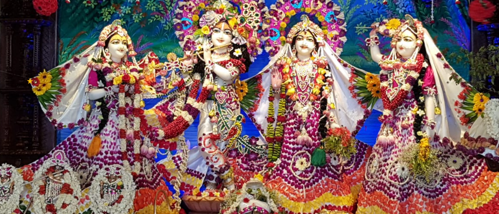

Isckon Temple

SKCON Chennai is located off the East Coast Road at the Hare Krishna land, Sholinganallur. The deities worshipped in the temple include those of Radha Krishna Lalita Vishaka, Jagannath Baladev Subhadra, and Sri Sri Nitai Gauranga.
ISKCON has more than 500 centers all over the world. The Chennai chapter of ISKCON inaugurated the present gorgeous temple at Sholinganallur on April 26, 2012. It has a lot of unique features. Find the chakras that line the body of the temple-purusha on the steps, see the avatars of the Lord governing the eight directions in attractive glass paintings and more!
Spread over an area of over 1.5 acres, the temple is constructed on five levels. There is a 7,000 sq ft temple hall on the first floor, an auditorium for cultural and spiritual programmes on the ground floor and a prasadam hall in the basement.
In the temple hall, there are three teak-wood altars which house the deities of Lord Krishna with His consort Radharani and their assisting friends Lalita and Vishaka, Lord Chaitanya with Lord Nityananda and Lord Jagannath, Baladeva and Subhadra. These deities have been sourced from Jaipur and Orissa. Designed under the guidance of His Holiness Bhanu Swami, the temple has imbibed various attributes from Vedic scripture and is inspired by the Pallava and Kalinga architecture.
The entrance to the temple is marked by the representation of the universe or the bhu-mandala on the marble floor. According to the cosmology of ancient Vedic puranas, the universe is described as series of circular islands surrounding a central pillar called Mount Meru. The design on the floor at the entrance depicts the same universal pattern. There is also a life-like statue of a cow feeding its calf at the portico.
The primary purpose of the temple to transform the material self-centred identity into a spiritual identity of unconditional love is graphically represented by means of a magnificent chandelier that projects various colours on the walls and ceiling. The chandelier has 500 Himalayan quartz crystals supposedly meant to intensify the spiritual energy in the temple.
The temple also visually displays various vastu shastra features.
For more details contact : +91 5900065551